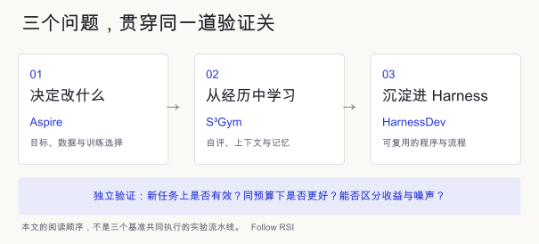
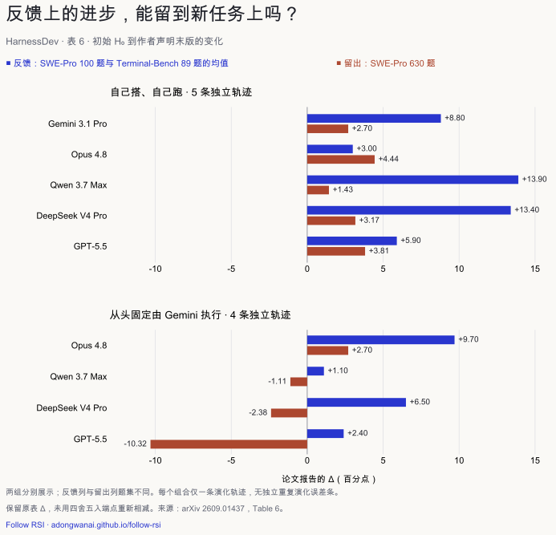

Oct 29, 2026 · @Sarah Eze · Follow RSI 深度解读
本页为作者提供原稿的核验修订版（2026-10-30），保留署名。修订主要补全实验条件、统计口径和证据限制；查看修订记录。
一句话结论：AI 已经能自己跑完「找问题 → 改自己 → 验证 → 保留」的流程，但稳定的、可迁移的改进还没有随之得到保证。 这些论文既有正收益，也有反馈集涨得多、留出集涨得少或倒退的结果。关键是分清：改进发生在什么设置下，评测是否独立，收益能否超过波动。
这篇笔记的依据是 2026 年 8–10 月的四篇基准与框架论文：
- ByteDance Seed「Self-Developing Agents」项目的三篇：Aspire、S³Gym、HarnessDev
- 伯克利、抖音集团、上海交大等机构联合发布的开源框架 RSIHub
另外用五篇论文作旁证：Harness-Delta Attribution、Rethinking the Evaluation、Auditing the Product、ECG-RSI、Terminal-RSI。
文中说的「自我进化」，指递归自我改进（RSI）：系统根据反馈修改自己的某个部分（权重、数据、提示、工具、记忆、工作流），并把被接受的修改带进下一轮。
自我进化的三步
这篇文章用三个问题串起自我进化：决定改什么、从自己的经历里判断什么有用、把有效的修改沉淀下来带进下一轮。 Self-Developing Agents 项目的三个基准分别提供了切入点。这是本文的阅读顺序，不代表三者在实验中串成了一个系统。

Harness 自进化是 Follow RSI 当前的专题：重点看冻结模型外围的提示、工具、技能和编排如何根据执行反馈更新并跨任务保留。本文把它放在第三个问题下讨论，但它也涉及诊断与选方向。三个问题都依赖同一个前提：能可靠地判断改完之后是不是真的变好了。
这里把 HarnessDev、RSIHub 归入 Harness 专项评测；Aspire 主要更新模型权重，S³Gym 主要比较上下文、记忆内容与权重更新，归入通用 RSI 评测，不计入 Harness 专题篇数。
第一步：给一个模糊目标，AI 还不会自己决定改什么
Aspire 的结论：12 个「模型 × 目标」组合里，只有 1 个的平均分超过了基座模型（+2.67）。
怎么测：
- 只给 Agent 一句目标，比如「提升数学推理」，一共 6 个目标。
- Agent 自己找数据或合成数据，自己发起 SFT 或 GRPO 训练，预算 40 GPU 小时。
- 评测用专家新写的 520 道隐藏题，Agent 看不到题目、答案，也看不到逐题反馈。
允许中途查看总分的设置下，结果也没好多少：30 格里只有 1 格留下了提升（+2.24）。而且这个提升就是在同一批题上挑出来的，作者自己也说不算独立确认。
典型的失败方式：
- 选错了方向。 Qwen3.5-4B 的 32 次导入数据里有 30 次是 GSM8K 或 MATH 这类数学数据，目标是写作、逻辑时也一样。它拿自己最熟悉的数据当万能解。
- 训练把模型训坏了。 5 个检查点用数字标签格式的 MMLU 数据训练后只会输出编号，得分是 0、0、0、6.1、0。
- 盲目延续。 一些长达 16–20 步的谱系在盲训后表现很差，有一条最终数学得分只有 0.159。因为中间没有逐步独立评测，不能据此断言每一步都在退化；部分后续上升也只是从先前崩溃中恢复。
- 给自己出题。 在评测 Harness 的那一小节里，有个版本只盯着自己写的 8 条检查清单优化，验证分涨了，隐藏题不涨。新生成的 Harness 最好也只有 27.22，没能超过参考版 Qwen-Agent 的 28.64。
这说明，把训练循环跑通，还不等于让能力真的涨起来。需要注意，训练实验只测了 4B 和 9B 两个小模型：只在终局评一次的设置中，每个「模型 × 目标」有两次独立运行；允许中途看总分的 30 格则每格一次。Harness 小节是一步生成，不是递归改进实验。
第二步：会给自己打分，不等于会从经历里学
S³Gym 报告：分块统计的事件正反馈一致率 A，与下一次 strict 检查点的归一化增益 g，相关系数为 ρ = −0.010。 这组具体指标没有显示明显相关性，不能泛化为所有自评指标都与改进无关，也不是因果结论。
怎么测： 用 7 个文字游戏，包括国际象棋、扫雷、俄罗斯方块、贪吃蛇、植物大战僵尸等。Agent 自己探索，给每一步打分，然后通过三条路径改进：
- 把原始经历放进上下文；
- 把经历写成带分数的总结记忆；
- 拿自己打过分的轨迹做 SFT。
探索和评测用不同的游戏配置和不重叠的随机种子。三条路径共用同一套交互预算，便于比较。
结果：
- 自评只是部分可靠。 下棋时自评和真实结果的一致率只有 0.496，而且偏自信。植物大战僵尸一致率 0.881，但分数校准很差。
- 总结记忆时好时坏。 对 GPT-5.5，国际象棋的 History ICL 与 Summary Memory 的 AUC+ 分别为 0.474、16.840；植物大战僵尸则分别为 548.499、33.219。这是两种记忆方案的对比，不是同一模型训练前后的得分变化。失败的总结往往太笼统，贪吃蛇的建议里就漏掉了安全走位需要的几何关系。
- 用自评轨迹训练不稳定。 Qwen3-8B 只在一个游戏上有明确收益，在扫雷、俄罗斯方块等游戏上没有提升。在植物大战僵尸上，初始 23 分，每个训练后的检查点都只有 6 分。
这一步的启示是：自我进化最常用的信号是「让模型自己判断这次做得好不好」，而这个信号本身就不可靠。局限在于：只有游戏环境，每个检查点在每个游戏上仅评 3 个 strict-mode 回合，部分模型是 GPT-4o 这类较早的模型。
第三步：沉淀进 Harness，收益能留到新任务上吗
HarnessDev 表 6 的九条演化轨迹，反馈分变化简单平均约 +7.2，留出分变化简单平均约 +0.5。 这个汇总混合了五条「自己搭、自己跑」和四条「从头固定由 Gemini 执行」的轨迹；反馈分是 SWE-Pro 与 Terminal-Bench 的均值，留出分只有 SWE-Pro。因此两个平均数不能当作完全同口径的效果量。五条自己执行的轨迹在留出集上全部为正，均值约 +3.1。
怎么测： 先让模型从一个弱但可运行的 seed 搭建 Harness；再给它初始 H₀ 之后最多 10 次完整评估对的预算，根据 100 道 SWE-Pro 和 89 道 Terminal-Bench 的反馈修改。冻结后用未向开发者返回结果的 630 道 SWE-Pro 留出题评估。

数据：表 6 的逐行抄录 CSV。图中保留原表报告的 Δ，不用已四舍五入的末版与 H₀ 端点相减替换。未添加误差条；原表没有提供九条轨迹各自重复演化的置信区间。
全部 64 次版本切换里，有 2 次有明确的正向证据，27 次落在噪声范围内（同一份代码重跑的 feedback pair-score 可波动约 ±4.75 分），8 次在两个基准上都倒退。反馈集和留出集的涨跌方向有 53.1% 一致；这描述了该批轨迹的对齐情况，没有建立“与随机无异”的统计检验。9 个最终宣布的版本里，只有 2 个是各自演化线上留出分最高的那个。
从零搭建的部分也一样参差：Opus 4.8 自建 Harness 的四基准平均分为 67.8，表中人类工程系统参考为 86.2；这个平均值不含 MLE-bench。写作（84.6 对 83.7）和 MLE-bench（32.9 对 24.0）有追平或超过参考版的例子；BrowseComp 中 Opus 的示例是 52.4 对 92.2，GPT-5.5 则为 52.6。这些参考比较没有统一执行模型，不能把差额全归于 Harness。局限：每种组合只跑了一条演化线，留出评测只覆盖 SWE-Pro。
方法横评与旁证：收益取决于什么条件
RSIHub 把 AHE、Hyperagents、A-Evolve、GEPA 四种方法放进同一套执行和评测流程里比，没有一种方法全面领先。
- 新闻里的「最高 +13.5 个点」出现在用 MiniSWE 当执行 Agent 跑 Terminal-Bench 2 时：56.2 → 69.7。
- 换成更强的 Codex，同一基准上四种方法只涨 +0 到 +2.2。
- 第一名随设置变化：Terminal-Bench 2 + MiniSWE 中 Hyperagents 与 A-Evolve 并列第一；τ³ Banking + MiniSWE 中 Hyperagents 最高。两个基准的 Codex 设置中，AHE 总分最高。
- 在密封的留出任务上会倒退：τ³ Banking + MiniSWE 这组，AHE 的密封集贡献降 4.1 个百分点，Hyperagents 和 GEPA 各降 2.1。这里的分母是整个基准，不能读成密封子集内部成功率下降同样幅度。
在 Terminal-Bench 2 这组实验中，MiniSWE 提升更大，Codex 的提升较小。τ³ Banking + Codex 仍有 +4.2 到 +9.3 个百分点的提升，这不足以推出所有强 Agent 上的自我改进都无效。RSIHub 没有验证复现版本能否对上原论文数字，也未报告完整匹配总 token 与费用的对照；主要演化实验是单次点估计。执行一致性控制另有三次重复，不能当作完整演化实验的三次重复。密封留出集仅有 20 与 27 题。
另外五篇论文补充了不同条件下的收益与证据边界：
| 论文 | 改进对象 | 发现 |
|---|---|---|
| Harness-Delta Attribution | Harness | 在 21 个搜索集收益显著的设置中，平均 54% 的收益归于检测到的过拟合、14% 归于额外推理算力；不是整个领域的通用比例 |
| Rethinking the Evaluation | Harness | TB2.1 中纯 Harness Evolution 的平均成绩低于朴素做法；Harness Scaling 另有不同表现，长时交互游戏中也报告了正面结果 |
| Auditing the Product | 改进流程本身 | 该审计的 26 个「更好的改进器」主张中，4 个报告了同起点、同预算的前后改进器比较；缺少设计不等于方法已被证伪 |
| ECG-RSI | 数据生成器 + 权重 | 外部综合分 S7 从 30.15 升至 46.61，三轮增量 +13.07、+3.01、+0.38；原文两套反馈错误分组表合计不一致，精确错误率待澄清 |
| Terminal-RSI | 权重 | 保留检查点的 TB2.1 从 51.70 到 86.52，训练外 SWR100 从 3% 到 6% 后进入平台；更广重叠审计与预先定义的选版规则仍不充分 |
后两篇主要改数据和权重，不能并入冻结模型的 Harness 方法。ECG-RSI 报告正的累计收益与递减的后期边际收益；Terminal-RSI 的训练外 SWR100 增益较小并较早进入平台。它们的度量和选择协议不同。
原文数据问题： ECG-RSI 的同一 3,000 题反馈集，类别表的错误总数是 1,189 / 983 / 803 / 640，难度表加总是 1,140 / 966 / 811 / 688。本次只报告差异，不修补论文数字，也不把其中一组当作已对账结果。
五个共同病因
把这些论文放在一起看，卡住自我进化的不是「不会改」，而是「不知道改得对不对」。具体可以拆成五点：
- 优化的是自己看得到的分数，不是真实能力。 反馈集、自己写的检查清单、验证集，都只是真实目标的替身。反复优化替身，就会过拟合到替身上：HarnessDev 里反馈集和留出集的涨跌方向只有 53.1% 一致；HDA 在 21 个搜索集收益显著的设置中，将平均 54% 归于检测到的过拟合。
- 收益比噪声还小。 HarnessDev 里，同一份代码重跑就能差 ±4.75 分；64 次版本切换里有 27 次的提升落在噪声范围内。在一个有噪声的分数上反复挑最好的，挑出来的往往是运气好的那次。重复次数与选择规则不充分会放大这种风险。各文有单条演化轨迹、两次运行平均或三次推理重复等不同口径；Terminal-RSI 尚未验证预先定义的选版规则，不能把条件式风险写成已确认的测试集选版事实。
- 自我评判不可靠。 没有外部答案时，系统只能靠自己判断好坏。S³Gym 里自评准不准和能不能进步的相关系数是 −0.010，让 Agent 自己写测试来验收也会偏离真实表现。
- 执行模型会影响收益。 HarnessDev 的四条「从头固定 Gemini 执行」轨迹中，三条在留出集上从初始版到末版倒退，GPT-5.5 构建者那条掉了 10.32 分。这不是把已经优化好的 self-runtime Harness 直接迁移后测出的落差。RSIHub 的 Terminal-Bench 2 中，Codex 设置的增益为 0 到 2.2 个百分点；这是不同起始 Harness 的演化对比，不能当成已优化 Harness 的直接迁移测试。
- 不会诊断，也不会选方向。 Aspire 里的小模型不管什么目标都导入数学数据。HarnessDev 的专用轨迹接口只调用了 2 次，显式检查的案例占反馈集的 0.5% 到 40.2%；模型也用自定义脚本和小规模探测，接口计数不能代表全部诊断活动。S³Gym 里写出来的经验总结太笼统，用不上。
前三点说的是验证问题，后两点说的是判断问题。自我进化要成立，系统得先知道自己哪里差、改完是否真的变好。这组实验显示，两者仍有明显的不稳定性。
什么才算「真的进化了」：读论文时问这七个问题
一篇自我进化论文的提升值不值得信，可以用下面七个问题检查。答不上的越多，分数越要打折。 这也是 Follow RSI 证据卡片的核验口径。
| 问题 | 为什么要问 | 本文里的例子 |
|---|---|---|
| 提升是在没见过的任务上测的吗？ | 在反馈集上测，等于闭卷考自己出的题 | HarnessDev：反馈集 +13.9，留出集只有 +1.43 |
| 最终版本是事先定规则选的，还是事后挑的？ | 拿测试集挑版本，测试集就不再是留出集 | Terminal-RSI 尚未验证预先定义的选版规则 |
| 和同等预算的朴素做法比过吗？ | 很多提升只是多花了算力 | Rethinking 的 TB2.1 纯 Harness Evolution 对照；HDA 在 21 个显著收益设置中平均 14% 归于额外算力 |
| 同一版本重跑差多少？提升比这个大吗？ | 无法与重跑波动区分时，证据不足以确认真实改进 | HarnessDev：重跑波动范围 ±4.75，64 次切换中 27 次落入噪声带 |
| 换一个执行模型或任务，提升还在吗？ | 只对一个模型有效的改动，是在迎合那个模型 | HarnessDev：从头固定 Gemini 执行的四条轨迹，三条的末版留出分低于初始版 |
| 做过数据去重和泄露检查吗？ | 训练或反馈里混进测试题，分数就只是记忆 | Aspire 有隐藏题去重门槛；Terminal-RSI 确认 SWR100 训练外，但更广重叠审计不完整 |
| 成本算全了吗？ | 演化本身的 token 和失败候选，也是代价 | HarnessDev 只统计执行 token，搭建 Harness 的 token 没算进去 |
Auditing the Product 发现，声称改进了「改进流程」的 26 篇工作里，只有 4 篇满足「同起点、同预算对比」这一条。
还缺什么：四个值得做的方向
要突破，关键不在更强的「修改器」，而在更可靠的「裁判」和「诊断」。 下面每个方向都已有工作在尝试，但它们自己的证据多数也还没被独立核验。
- 把「接不接受这次修改」交给独立裁判。 搜索用的任务、挑版本用的任务、最终评测的任务三者分开，评测代码放在可改范围之外。RSIHub 本次实验使用了 train、gate、sealed 三个分区，sealed 不参与修改反馈；框架本身允许 gate 与 train 重合，不能当作所有配置的强制保证。StarHarness 的相关描述来自库内摘要，本轮未重读。
- 让「不过拟合」成为优化目标本身。 RRSI 用逐步收紧的修改预算，并用一个评审筛掉只对特定基准有效的提案；Bad Genius 用反事实挑战拦下投机取巧的修改；MaD-RSI 把多个模型的失败一起当证据，直接优化跨模型泛化。
- 先学会诊断，再动手改。 ECDYSIS 只让「跨任务反复出现的失败」驱动持久修改，把模型本身的局限和 Harness 的缺陷分开。HarnessDev 显示，现在的模型有轨迹接口也几乎不用，这本身就是一个可训练的能力。
- 用统计学的方式接受修改。 先实测重跑噪声，只接受超出噪声带的提升，并报告多次运行的区间。REUSE 研究的就是反复用同一批基准做选择时怎么控制误差。
还有一个更根本的开放问题：在没有标准答案的开放任务里，用什么信号选版本？ 库内摘要显示 Harness²、TTHE、HarnessPro 提出了代理信号方案；本轮没有重读这些论文，无法判断其失效分析覆盖了哪些边界。
这篇笔记的局限
- 「还不会」不等于「不可能」。 论文报告了正的提升：RSIHub 里 MiniSWE +13.5；HarnessDev 里五条「自己搭、自己跑」的演化线，在留出集上也都有 +1.4 到 +4.4。问题在于提升幅度小、不稳定，还依赖具体的执行模型。
- 重复口径差异很大：Aspire 的终局设置每格两次，Rethinking 部分实验两次运行平均，ECG-RSI 另有三训练种子，Terminal-RSI 的 Mean@3 是推理重复；这些不能等同于重复整个演化流程。本文涉及的实验主要集中于代码、终端、游戏、小模型训练和 ECG 场景。
- 数字取自论文摘要与正文表格，原稿日期为 2026 年 10 月 29 日，核验修订于 10 月 30 日。本次检查了公开原文与算术，没有复现训练，也没有核验完整原始运行日志。「还缺什么」一节提到的 StarHarness、RRSI、Bad Genius、MaD-RSI、ECDYSIS、REUSE、Harness²、TTHE、HarnessPro，引自 Follow RSI 证据库里的一句话摘要，这次没有逐篇重读。
参考文献
- Aspire: Can Models Self-Evolve from Vague Goals?（arXiv 2608.31111，ByteDance Seed 等）
- S3Gym: Can LLMs Turn Self-Testing and Self-Judging into Self-Improvement?（arXiv 2608.31100，ByteDance Seed 等）
- HarnessDev: Can LLMs Create and Evolve Their Own Agent Harness?（arXiv 2609.01437，ByteDance Seed 等）
- RSIHub: A Composable Framework for Agent-Evolution Methods（arXiv 2610.32253，UC Berkeley、抖音集团、上海交大等）· 代码
- Harness-Delta Attribution（arXiv 2610.22466）
- Rethinking the Evaluation of Harness Evolution for Agents（arXiv 2607.12227）
- Auditing the Product, Not the Recursion（arXiv 2610.27610）
- ECG-RSI（arXiv 2610.17718，蚂蚁集团、浙江大学）
- Terminal-RSI（arXiv 2610.22192，腾讯混元、新加坡国立大学）
- Self-Developing Agents 项目页